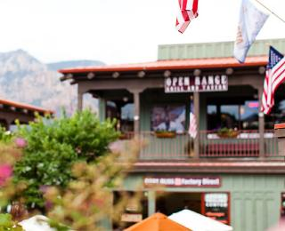
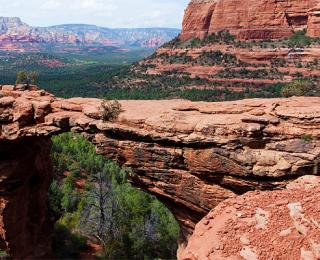

Седона — небольшой городок в Аризоне,
заслуживающий большего!
Рассмотрим 5 причин, по которым Седона круче, чем гранд каньон!
Настоящий
— №1 —
городокСедона не аттракцион для туристов,
там течет своя жизнь Жилье
Рекомендуем пожить в настоящем
мотеле, все как в кино!Сувениры
Не только китайского,
но и местного производства!Еда
Всегда заказывайте фирменный бургер,
вы не разочаруетесь!
Там есть
— №2 —
мост дьяволаДа, по нему можно пройти!
Если вы осмелитесь, конечно Небольшая
— №3 —
площадьВсе интересные места находятся очень близко
Красивая
— №4 —
дорогаЕхать в Седону из Лас‑Вегаса совсем
не скучно!Мало
— №5 —
туристовБольшинство едет в Гранд Каньон и
толпится там
Поиск гостиницы
Заинтересовались?
Укажите предполагаемые даты поездки,
и мы покажем вам лучшие предложения гостиниц в Седоне